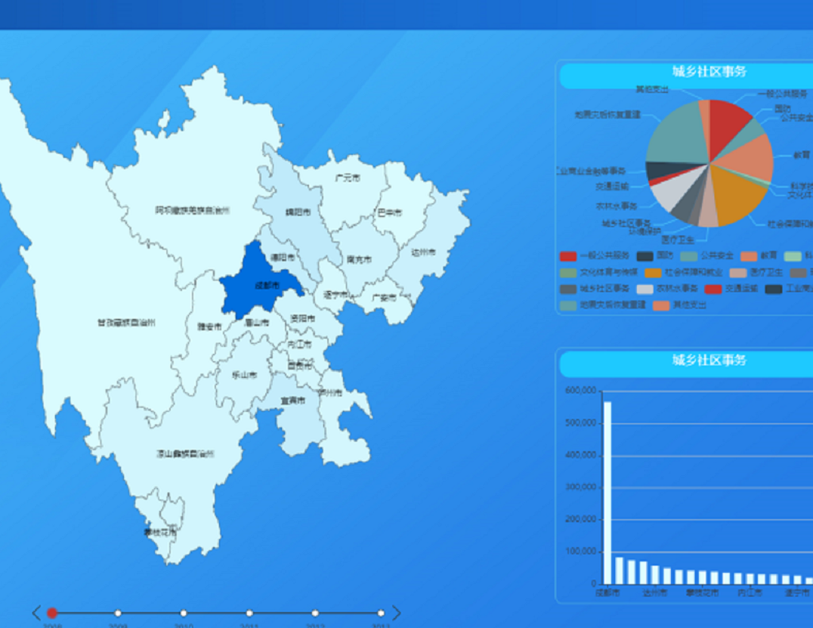
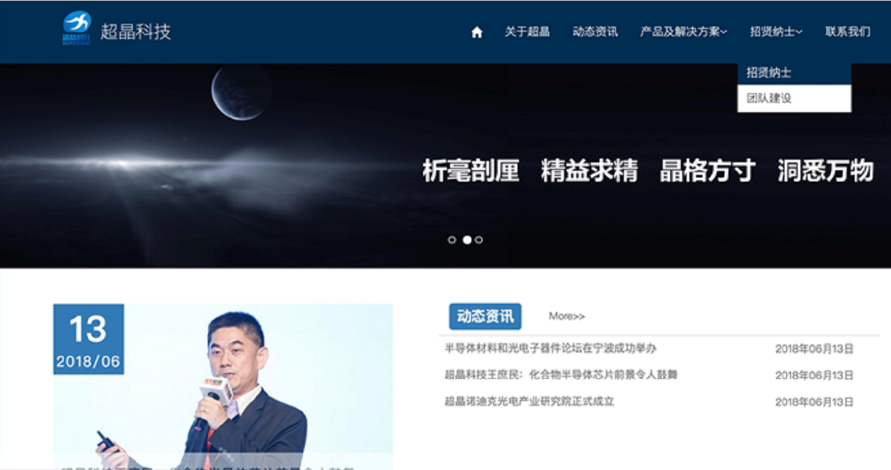
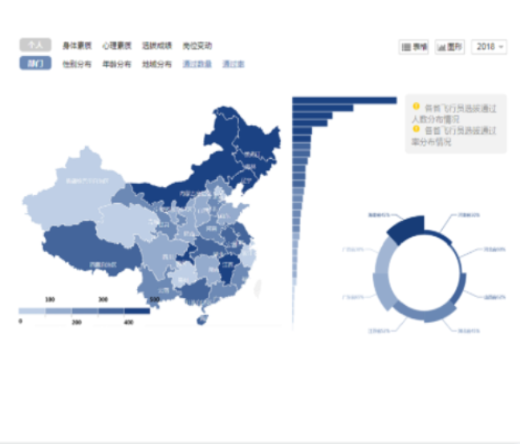
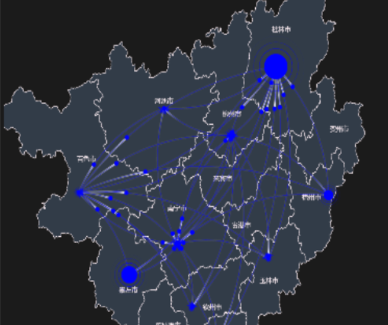

四川财政厅可视化
系统
根据四川省财政厅的工作内容及范畴，进行详细彻底的国外调研，整理数据，设计展现形式，最后通过代码开发，实现了四川省财政厅的可视化系统实现。

超晶科技网络建设
设计并开发了超晶科技的官方网站，实现了动态交互、多功能菜单等各种网页交互功能，美观大气。

人力资源可视化
应用平台
对人力资源进行详细彻底的国内外调研，整理数据，设计展现形式，实现了人力资源的可视化系统实现。

广西北斗综合位置
服务平台
设计广西北斗综合位置服务平台的可视化系统，可视化展示广西北斗信息产业发展态势、在线评价、用户指标数等信息并与数据库连接，可后台操作。

联系电话：023-69216666
联系邮箱：suishui@qq.com
办公地址：北京市海淀区北京涑水科技有限公司